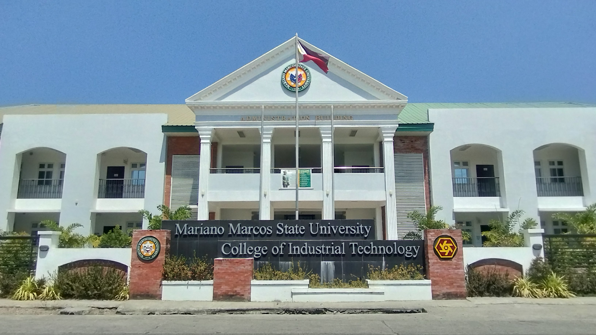

Historical Background
The College of Industrial Technology (CIT) is located in Laoag City, with an external campus in Paoay, Ilocos Norte. It was chosen in 1983 as one of the 21 public technological institutes in the Technical Vocational Education Project (TVEP) of the then Department of Education, Culture, and Sports (DECS) mandated to produce the needed manpower for industrial growth and development in the country.
